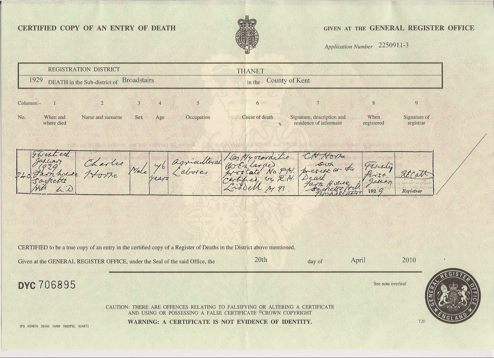
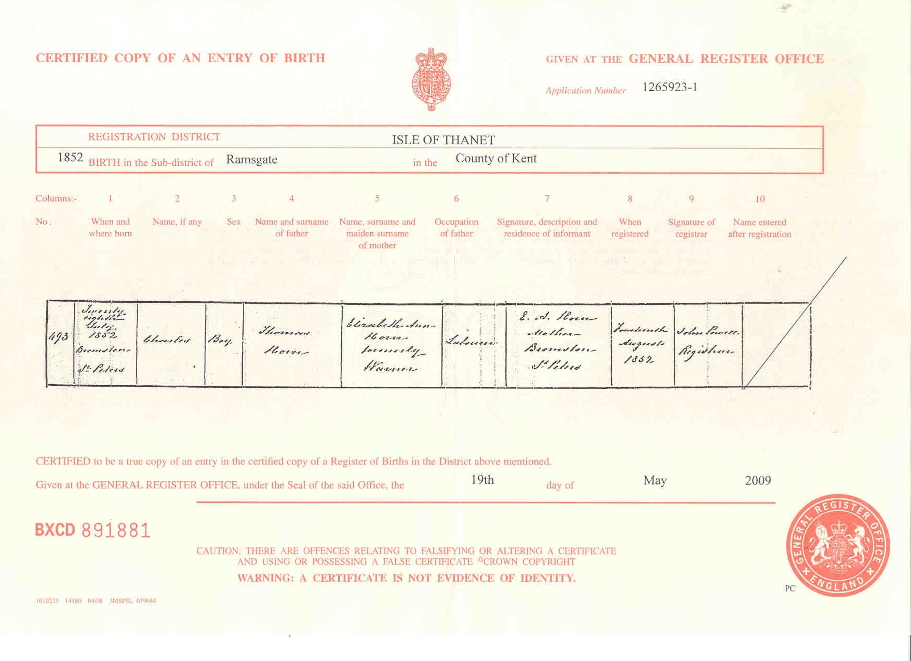
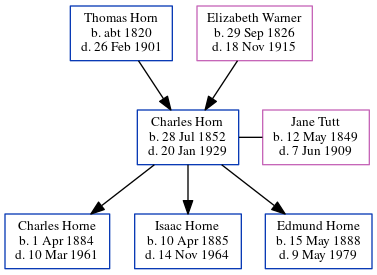

Charles Horn 1852 - 1929
[ Home ] | [ Calendar ] | [ Surnames Index ] | [ Errors ] | [ Family History ]A waggoner on a farm and agricultural labourer and the child of Thomas Horn (a farm bailiff) and Elizabeth Warner (a general shopkeeper), Charles Horn, the great-grandfather of Nigel Horne, was born in St Peters, Thanet, Kent, England on 28 Jul 18521,2,3,4,5,6, was baptised there on 10 Oct 1852 and married Jane Tutt (a laundress with whom he had 3 children: Charles Henry, Isaac and Edmund) at Mount Ephraim Baptist Chapel, Margate, Kent, England on 9 Jun 18838 (Mount Ephraim Chapel).
During his life, he was living Northdown in Margate on 2 Apr 18711; at Drapers Cottage in Margate on 5 Apr 18919; at 15 Haine Cottages, St Lawrence, Thanet, Kent on 31 Mar 190110 - less than a mile from his nephew Isaac Horne who was living at 15 Haine Cottages, St Lawrence, Thanet, Kent; and at Elder Cottage, 23 Northdown Road, St Peters, Thanet, Kent on 2 Apr 191111 (when he was living with his) following the death of his wife on 7 Jun 1909.
He died on 20 Jan 1929 in Broadstairs, Kent, England7 (myocarditis and enlarged prostate) and was buried in St Peters after 20 Jan 1929.
Parents
- Thomas was born c. 1820
- Elizabeth Ann was born on 29 Sept 1826
Children
- Charles Henry was born on 1 Apr 1884
- Isaac was born on 10 Apr 1885
- Edmund was born on 15 May 1888
Citations
- 1871 England Census Online publication - Provo, UT, USA: The Generations Network, Inc., 2004.Original data - Census Returns of England and Wales, 1871. Kew, Surrey, England: The National Archives of the UK (TNA): Public Record Office (PRO), 1871. Data imaged from the National (Relation to Head of House: Servant)
- 1891 England Census Online publication - Provo, UT, USA: The Generations Network, Inc., 2005.Original data - Census Returns of England and Wales, 1891. Kew, Surrey, England: The National Archives of the UK (TNA): Public Record Office (PRO), 1891. Data imaged from The National
- 1901 England Census Online publication - Provo, UT, USA: The Generations Network, Inc., 2005.Original data - Census Returns of England and Wales, 1901. Kew, Surrey, England: The National Archives of the UK (TNA): Public Record Office (PRO), 1901. Data imaged from the National
- 1911 England Census Online publication - Provo, UT, USA: Ancestry.com Operations, Inc., 2011.Original data - Census Returns of England and Wales, 1911. Kew, Surrey, England: The National Archives of the UK (TNA), 1911. Data imaged from the National Archives, London, England.
- England & Wales, FreeBMD Birth Index, 1837-1915 Online publication - Provo, UT, USA: The Generations Network, Inc., 2006.Original data - General Register Office. England and Wales Civil Registration Indexes. London, England: General Register Office. © Crown copyright. Published by permission of the Cont
- Other
- England & Wales, Death Index: 1984-2005 Online publication - Provo, UT, USA: The Generations Network, Inc., 2007.Original data - General Register Office. England and Wales Civil Registration Indexes. London, England: General Register Office. © Crown copyright. Published by permission of the Cont
- England & Wales, FreeBMD Marriage Index: 1837-1915 Online publication - Provo, UT, USA: The Generations Network, Inc., 2006.Original data - General Register Office. England and Wales Civil Registration Indexes. London, England: General Register Office. © Crown copyright. Published by permission of the Cont
- 1891 England, Wales & Scotland Census - Findmypast (was age 38 and the head of the household)
- 1901 England, Wales & Scotland Census - Findmypast (was age 48 and the head of the household)
- 1911 Census for England & Wales - Findmypast (was age 58 and the son of the head of the household)
Media
Charles Horne and Jane Tutt - Marriage Certificate

Charles Horn - death certificate

Charles Horn - birth certificate

Thanet Advertiser - 16 Jun 1883

1871 England, Wales & Scotland Census Transcription - GBC-1871-0014283933
England & Wales marriages 1837-2008 Transcription - BMD-M-1883-2-AZ-000132-257
Canterbury Baptisms Transcription - GBPRS-CANT-B-96351298
1911 England, Wales & Scotland Census Transcription - GBC-1911-RG14-04507-0405-2
1901 England, Wales & Scotland Census Transcription - GBC-1901-0007467101
England & Wales births 1837-2006 - BMD/B/1852/3/AH/001761/031
1881 England, Wales & Scotland Census - GBC/1881/0004871136
1871 England, Wales & Scotland Census Transcription - GBC-1871-0014275839
Family Trees - FMP/1089933091
Family Tree
Map
Generated by ged2site. Last updated on Jul 3, 2024
Known Issues
Burial place (St Peters, Thanet, Kent, England) has no citations
May have been living with mother on 2 Apr 1871, but the addresses don't match or aren't detailed enough to be sure
May have been living with father on 2 Apr 1871, but the addresses don't match or aren't detailed enough to be sure
Adding date of burial as 'aft 20 Jan 1929'
Census information missing between 1871 England Census and Census UK 1891